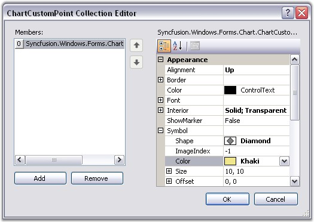
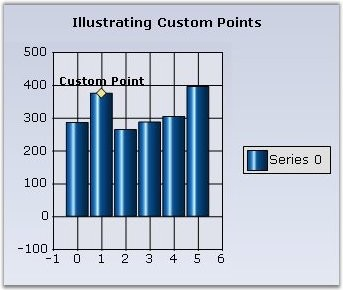
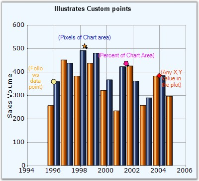

Essential Chart supports plotting of points on the Chart Area even if they don't belong to a series. These are stored in the ChartControl.CustomPoints collection. They can be set at custom coordinates of the Chart Area or be made to follow a certain point or percentage coordinates. A custom point displays a text, background, border, symbol and marker, which is a line that connects the CustomPoint with the point on the chart area when it is offset from it.
Through Designer the Custom Points can be set using the CustomPoints property. Clicking this property will popup ChartCustomPoint Collection Editor window where you can add your custom points.
You can set the co-ordinates (XValue and the YValue property), symbols and their customization, using the Symbols property, text, using the Text property, alignment of the text, using the Alignment property and so on.

Figure 238: CustomPoints Collection Editor during Design Time

Figure 239: ChartControl with a Custom Point
Programmatically
· Creating and Customizing the Custom Point.
|
[C#]
// Point that follows a series point: ChartCustomPoint cp = new ChartCustomPoint();
// Gets the series index and point index if the Customtype is Pointfollow. cp.PointIndex = 1; cp.SeriesIndex = 0;
// Specifies the text of the custom point. cp.Text = "Custom Point";
// Specifies the custom type. chartCustomPoint1.CustomType = Syncfusion.Windows.Forms.Chart.ChartCustomPointType.PointFollow;
// Specifies the shape of the custom point symbol. cp.Symbol.Shape = ChartSymbolShape.Diamond;
// Specifies the color of the custom point. chartCustomPoint1.Symbol.Color = Color.Khaki;
//Setting X-value and Y- value chartCustomPoint1.XValue = 1; chartCustomPoint1.YValue = 370;
//Setting the font properties chartCustomPoint1.Color = System.Drawing.SystemColors.ButtonHighlight; chartCustomPoint1.Font.Bold = true; chartCustomPoint1.Font.Facename = "Verdana"; chartCustomPoint1.Font.Size = 10F; |
|
[VB.NET]
'Point that follows a series point: cp As ChartCustomPoint = New ChartCustomPoint()
'Gets the series index and point index if the Customtype is Pointfollow. cp.PointIndex = 1 cp.SeriesIndex = 0
'Specifies the text of the custom point. cp.Text = "Custom Point"
'Specifies the custom type. chartCustomPoint1.CustomType = Syncfusion.Windows.Forms.Chart.ChartCustomPointType.PointFollow
'Specifies the shape of the custom point symbol. cp.Symbol.Shape = ChartSymbolShape.Diamond
'Specifies the color of the custom point. cp.Symbol.Color = Color.Khaki
//Setting X-value and Y- value chartCustomPoint1.XValue = 1 chartCustomPoint1.YValue = 370
'Setting the font properties chartCustomPoint1.Color = System.Drawing.SystemColors.ButtonHighlight chartCustomPoint1.Font.Bold = true chartCustomPoint1.Font.Facename = "Verdana" chartCustomPoint1.Font.Size = 10F |
 Note: You can also customize a custom point symbol
using Symbol property.
Note: You can also customize a custom point symbol
using Symbol property.
· Adding Custom Point to the Chart.
|
[C#]
// Adds the custom point to the collection. this.chartControl1.CustomPoints.Add(cp); |
|
[VB.NET]
'Adds the custom point to the collection. Me.chartControl1.CustomPoints.Add(cp) |
Custom point types
|
CustomPoint types |
Description |
|
PointFollow |
This custom point will follow the regular points of any series, to which it is assigned. |
|
ChartCoordinates |
This lets you render a point type at any location in the chart. |
|
Percent |
The coordinates are specified as the percentage of the chart area. |
|
Pixel |
The coordinates are specified to be in pixels of the chart area. |

Figure 240: Custom Point Types Illustrated
The custom point symbols in the above image represents following Custom Types respectively.
1. Yellow “Circle” – PointFollow
2. Orange “Star” - Pixel
3. Pink “Pentagon” - Percent
4. OrangeRed “Diamond” - ChartCoordinates
A sample demonstrating all the custom point types is available in our installation at the following location:
..\My Documents\Syncfusion\EssentialStudio\Version Number\Windows\Chart.Windows\Samples\2.0\Chart Series\Chart Custom Points
 Custom Point in Multiple
Axes
Custom Point in Multiple
Axes